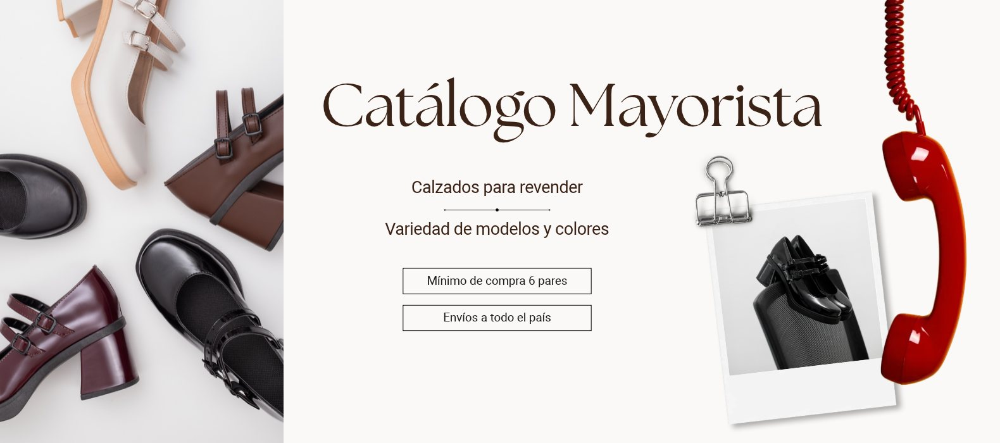

Color
Talle
Descripción

Desde 1988, en SAVA transformamos nuestra pasión por el calzado en una identidad propia.
Con raíces familiares y una filosofía que nos acompaña generación tras generación, creamos diseños pensados para la mujer argentina: una mujer sofisticada, auténtica, versátil y atrevida.
Cada pieza nace del trabajo artesanal, la dedicación y la experiencia de quienes hacen de cada zapato algo único, combinando diseño, comodidad y calidad.
Elegir SAVA es elegir una historia que sigue caminando, una industria nacional que crece, se reinventa y mantiene con orgullo sus raíces.
Diseñamos con identidad. Creamos con pasión. Caminamos con orgullo argentino.
Color
Talle
Descripción